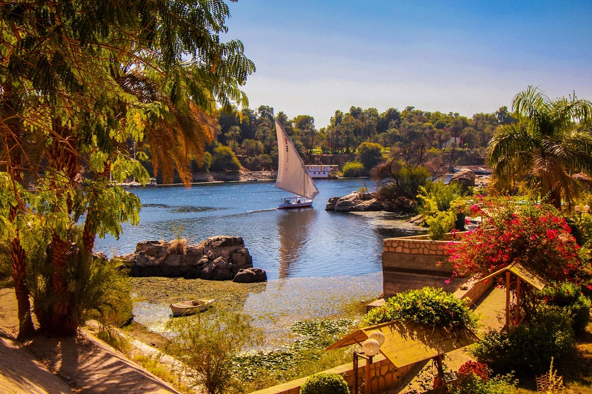

The Egyptian city of Aswan
Aswan is one of the Nubian cities in Egypt, and was previously considered its southern gate. The city of Aswan is located on the eastern bank of the Nile River at the first cataract, with a population of approximately 1,480,284 people, according to the 2016 census. The city of Aswan is considered one of the oldest cities in Egypt, and includes many ancient cultural relics and antiquities, which made it a distinguished tourist city. The history of the city of Aswan The importance of the city of Aswan emerged in the era of the Old Kingdom, as it was the point of the southern border of Egypt at that time, and it had a decisive role in the history of Egypt in fighting the Hyksos. They built
many temples there. Such as the temples of Philae, which is considered the home of the god (Isis), and many other templesthat were converted into churches during the era of Christian ity in Egypt during the fifth century AD, which facilitated the spread of the Christian religion. In Nubia, whether in Egypt or Sudan, and at the advent of Islam, Aswan developed specifically in the tenth century AD, when it was a passage for caravans and travelers, to the coastal region of Al-Aydab on the Red Sea, before it. . It seems. Its sea voyage to the other side of the Red Sea, where the countries of Hijaz, Yemen and India are spread,
and schools and centers of science and culture are spread. It is noteworthy that the first military school was established in Egypt in 1837 AD in the city of Aswan by Muhammad Ali. The most important tourist attractions of Elephantine Island Elephantine Island is located opposite the city of Aswan, and it served as an impregnable fortress on the southern border, and its idol was the god (Khnum), so the Temple of Khnum is the most important of them. they. they. A famous landmark, in addition to the tomb of the holy ram, the gate of King Amenhotep II, the trinity of Sat and Anat, and the Nilometer dating back to the Roman era, in which the scales of the Nile flood appear, are in both of them. Greek and Arabic. Tombs of the Nobles The Tombs of the Nobles are tombs carved into the rock of the rulers of the city of Aswan, whose origins go back to ancient times, and the most prominent of these tombs are: the Mecho cemetery, the Sabni cemetery, and others. And each of them has a tomb in which the title of the ruler or nobleman buried in it is written, and the type of mission he carried out, in addition to his role in protecting Egypt, and his travels within the continent of Africa. . The Monastery of Anba Semaan is one of the original Coptic monasteries in Egypt, and it contains a church that represents images of Christ, in addition to a number of saints in the Christian religion. The monastery dates back to the sixth century AD. The Imperfect Obelisk: The length of the imperfect obelisk is approximately 41 meters, while the length of its base side is approximately four meters, while its weight is one hundred and seventeen tons. used in sculpture. Another tourist attraction of the city of Aswan is Agilika Island: it contains a temple and the ruins of Philae, as it was moved to it from its original location on Philae Island. Amoun Island: It is a small island that is being invested in to establish a tourist hotel.